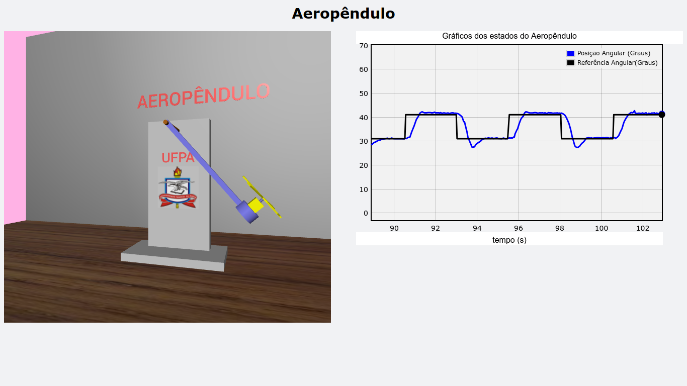

Gêmeo Digital

O que é
O Gêmeo Digital é um sistema gráfico computacional que reproduz em tempo real a dinâmica do protótipo físico. Isso permite virtualizar o Aeropêndulo — observar a mesma dinâmica do sistema real, agora num ambiente gráfico 3D — obtendo o estado atual do braço por meio da comunicação serial com o microcontrolador.
🚀 Simulador Interativo 3D em Tempo Real (Three.js / PBR)
A evolução do Gêmeo Digital adota uma arquitetura nativa em WebGL com Three.js e PBR (Physically Based Rendering), eliminando dependências de servidores locais e proporcionando renderização de nível industrial diretamente no navegador:
[!TIP] Interação com o Modelo 3D: Arraste com o botão esquerdo para orbitar a câmera, utilize o scroll do mouse para zoom e segure
Shift + arrastepara transladar a visão. Use os botões do painel lateral para alternar entre sinais de entrada (Senoidal, Quadrada, PRBS ou Degrau) ou inspecionar detalhes com os botões de Foco Eletrônica e Foco Pivô/Sensor.
Destaques da Nova Modelagem:
- Fidelidade Mecatrônica Total: Mastro vertical com reforço triangular naval, eixo apoiado em mancal axial com transferidor angular graduado de \(0^\circ\) a \(170^\circ\), haste em fibra de carbono 3K, motor Coreless e hélice bipá balanceada com rotação proporcional ao empuxo.
- Painel Dinâmico Minimizável e Responsivo: O painel de controle lateral pode ser minimizado com um único clique no botão de seta ou no cabeçalho, recolhendo-se em uma pílula compacta de telemetria contínua (\(\theta\) e \(V\)) para desobstruir a visualização do modelo 3D. O estado inicial pode ser controlado via parâmetro de URL (
?min=1ou?compact=1). - Barra HUD Superior Unificada: Cabeçalho discreto de perfil ultra-fino contendo identificação de status em tempo real, alternador de tema claro/escuro, controle de órbita automática da câmera e botão de abertura/fechamento da tampa acrílica protetora da eletrônica.
- Sincronização Bidirecional de Tema (Claro / Escuro): O simulador 3D sincroniza sua iluminação de estúdio, grid e plano de fundo automaticamente com o tema da documentação (MkDocs Material) via
postMessageeMutationObserver(javascripts/theme_sync.js). Ao alternar o tema do site no canto superior da página, o ambiente 3D acompanha a transição em tempo real. - Arquitetura Eletroeletrônica Completa:
- Estágio de Baixa Tensão (3.3V): Módulo microcontrolador ESP32 TTGO T1 com acabamento em verniz fosco, vias passantes metalizadas (PTH), serigrafia com pinout técnico detalhado, filtro antialiasing RC passivo (\(f_c \approx 80\text{ Hz}\)) e optoacopladores lógicos.
- Estágio de Alta Potência (5V/3A): Placa Driver MOSFET Ponte H com barramentos maciços de corrente, dissipador térmico aletado de alto fluxo em alumínio anodizado preto e capacitores de filtro low-ESR.
- Alimentação Industrial: Fonte chaveada industrial com chassi perfurado em colmeia (honeycomb) e chave geral iluminada.
- Roteamento Limpo: Cabos de alta corrente 18 AWG e chicote blindado do sensor potenciômetro passando por canaletas estruturais sem sobreposição de sólidos.
Comparação: VPython vs. WebGL Nativo (Three.js)
| Característica | VPython (Legado) | Three.js / WebGL (Atual & Futuro) |
|---|---|---|
| Arquitetura | Processo Python local acoplado a backend WebSocket | Motor WebGL cliente nativo rodando em GPU acelerada |
| Fidelidade Visual | Formas geométricas simples (cores planas, sem PBR) | Materiais PBR realistas com Normal/Bump Maps e serigrafia |
| Eletrônica e Fiação | Apenas braço e mastro esquemáticos | Eletrônica completa (ESP32, Driver, Fonte, Sensor, Chicotes) |
| Dependências | Requer vpython, setuptools < 82 e servidor local |
Roda diretamente em qualquer browser, WebViews ou Nuvem |
| Portabilidade | Restrito ao ambiente Python desktop | Universal (Desktop, Mobile, Tablet, LMS e Nuvem RLaaS) |
Arquitetura do Software Python (Legado VPython)
O simulador original em Python é dividido em três módulos:
- Módulo de gráficos de linha — plota os sinais em tempo real (posição angular, referência, erro, sinal de controle).
- Módulo de animação 3D — desenha e movimenta a estrutura do Aeropêndulo com primitivas VPython.
- Módulo Simulador — integra os dois anteriores e atualiza seus estados a partir dos dados recebidos da Interface Gráfica de Usuário, que fornece o ângulo real do protótipo; a velocidade angular é calculada internamente pelo próprio módulo, por diferença finita entre amostras consecutivas do ângulo.
A classe principal (Simulador, em
simulador_aeropendulo/simulador.py)
recebe como parâmetros uma instância de gráficos e uma de animação, e expõe métodos para
rotacionar o braço e atualizar os estados do sistema a cada novo dado recebido do protótipo — veja a
referência dos módulos
para os detalhes de cada classe.